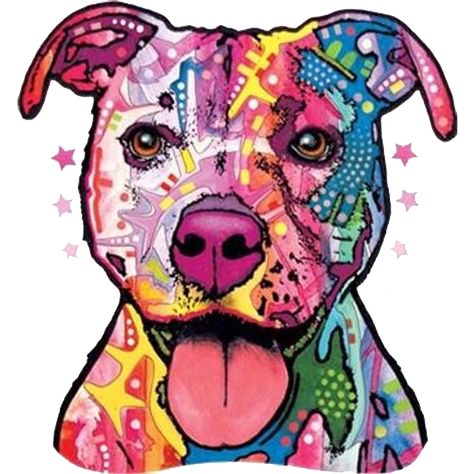

We, The Pitbull Haven, was founded in November 2021 as a non-profit rescue and sanctuary. Though we are based in Chattanooga, Tennessee, we have outreach throughout the United States. The Pitbull Haven works with many rescues, shelters, and sanctuaries to create a network to help as many of the bully breed as we can. We are all volunteers and give our time and resources for the sole purpose of helping the breed and education of the breed. The Pitbull Haven's mission is to educate the true nature of the dogs labeled pit bulls in an effort to restore their reputation. We offer a safe place for the homeless, abused, abandoned, and forgotten. We work with the animals and search for loving and responsible forever homes for the dogs that we help and offer a place for those that cannot be placed in a home.

TPH Gallery
The gallery of The Pitbull Haven has images of the past animals the we have helped and current animals that we are helping.